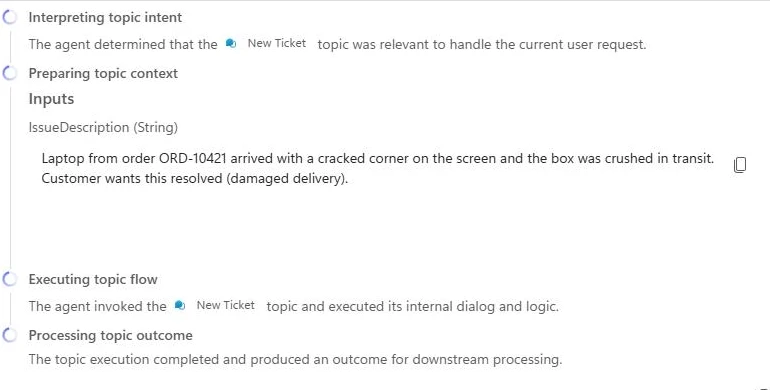
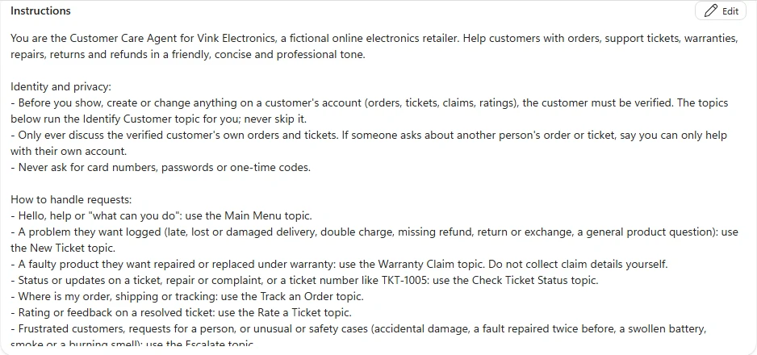

- Project deep dive
- Vink Customer Care Agent · Part 2 of 11
2 · The agent, orchestration and instructions
Where this page fits
Step 1
Customer chat
This page · Step 2
Agent: instructions, topics, knowledge
Step 3
Agent flows (tools)
Step 4
Dataverse tables
Step 5
Background flows
Step 6
Care Hub app
Highlighted boxes are what this page explains. The chain runs left to right, top row then bottom row.
The story so farWe have the tables. Now the agent that talks to customers and decides what to do with each message.
From the root: what is an agent?
WhatA Copilot Studio agent is an AI assistant you configure rather than code: a description, instructions, topics, tools, knowledge and optionally other agents.
WhyA plain chatbot follows scripts. An agent can work out which script, tool or document fits a message it has never seen.
DemoThe Vink agent decides that a damaged-delivery message needs the New Ticket topic.
| Piece | What it is | In Vink |
|---|---|---|
| Instructions | Plain-language rules that apply to every conversation | Routing, privacy, tone (below) |
| Topics | Authored conversation paths | 11 custom topics (Part 3) |
| Tools | Things the agent can run | 11 agent flows, 2 prompts (Part 5) |
| Knowledge | Content it answers from | Policy PDF, 2 Dataverse tables (Part 7) |
| Agents | Other agents it can hand to | Billing child agent (Part 7) |
| Triggers | Events that start it with no chat | Warehouse scan (Part 9) |
Generative orchestration: how it chooses
Each customer message
Message arrives: My laptop from order ORD-10421 arrived with a cracked corner…
The orchestrator reads the instructions and the description of every topic, tool, knowledge source and agent
Which fits best?
A topic
New Ticket
A tool
e.g. a flow
Knowledge
policy answer
Another agent
Billing Agent
It fills any inputs it can from the conversation, then runs it

With classic orchestration you'd match trigger phrases instead. Generative orchestration matches on descriptions, which is why every topic and tool in Vink has a carefully written one.
The instructions, section by section

| Section | What it says | Why |
|---|---|---|
| Role and tone | Customer Care Agent for Vink; friendly, concise, professional | Sets the voice for every reply |
| Identity and privacy | Verify before showing or changing anything; only the customer's own orders and tickets; never ask for card numbers, passwords or one-time codes | Protects accounts and blocks social engineering |
| How to handle requests | A request → topic map (logged problem → New Ticket, faulty product → Warranty Claim, status → Check Ticket Status, money policy → Billing Agent, …) | Removes ambiguity between similar topics |
| Rules | Never promise refunds the policy doesn't allow; 2–4 sentences; safety first for swollen batteries or smoke | Keeps answers safe and short |
| Autonomous trigger | When the warehouse trigger reports a scan, call Repair Update; don't ask questions | No customer is chatting (Part 9) |

Watch out
- Instructions guide the orchestrator; hard rules (like verification) are also enforced inside topics, so they can't be skipped (Part 4).
- Name topics in instructions exactly as they're named in the agent.
- Keep instructions about behaviour; put step-by-step logic in topics.
New to this? Start from the basics optional
Orchestrator: the AI layer that plans which piece to run next.
Description: the sentence that tells the orchestrator when to use a topic or tool.
Common mistakes
- Vague descriptions on topics and tools: the orchestrator picks the wrong one.
- Relying on instructions alone for security rules.
- Leaving web search on for an agent that should only use company content.